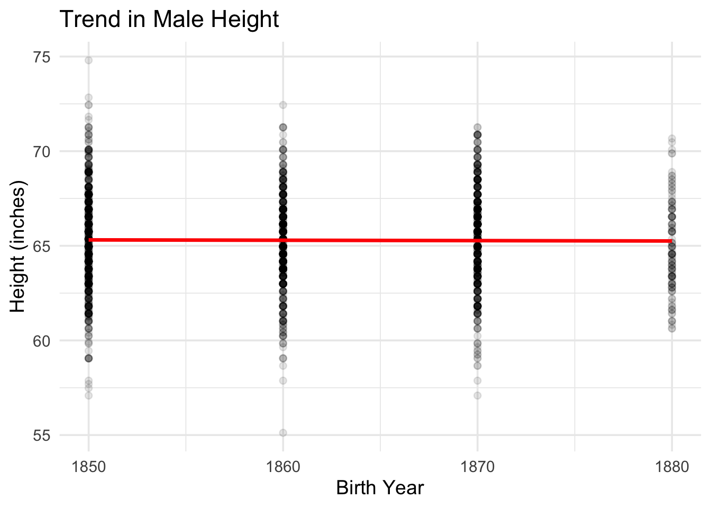

height_flies
Code
bavaria_19th <- read_dta("data/germanconscr.dta")
bls <- read_dta("data/germanprison.dta")
soldiers <- read.dbf("../case_studies/data/B6090.DBF", as.is = TRUE)
Dart_Expert <- read_csv("../case_studies/data/Dart_Expert.csv")
# bls_height <- read_csv("https://raw.githubusercontent.com/hadley/r4ds/main/data/heights.csv") %>%
# mutate(birth_year = 1950) # mid-20th century
wisconsin <- read_sav("data/main05022005.sav")Code
ggplot(all_data, aes(birth_year, height.in)) +
geom_point(alpha = 0.1) +
geom_smooth(method = "gam", formula = y ~ s(x, k = 3), # chat gave me this to add in the line
se = FALSE,
color = "red",
linewidth = 1.2
) +
labs(
title = "Trend in Male Height",
x = "Birth Year",
y = "Height (inches)"
) +
theme_minimal(base_size = 14)
Interpretation and Conclusion
To make my final dataset, I pulled together four different height datasets: Bavarian conscripts, German soldiers, BLS prisoners, and the Wisconsin survey. Each dataset used different column names and sometimes different measurement units, so the first thing I did was rename the variables and convert the heights so everything matched. After that, I combined them into one dataset, removed rows with missing birth years, and filtered out impossible heights like 0 inches. I also kept only birth years after 1700 so the graph would focus on the main historical period we care about.
When I compare this project to the earlier height assignment, the stories they tell are really different. The worldwide dataset from before showed a clear pattern that humans have gotten taller over time. But in this dataset, the height trend looks basically flat. That’s because the studies I used only give a few scattered birth years, not a continuous timeline, so all the points show up in clumps. It’s not that the data contradicts the earlier project—it’s just answering a different question using way less complete information.
So if someone said “humans are getting taller over time,” based on the data I’d say no they are not. However, the previous global data covered hundreds of years and multiple countries, while this one only has a few groups from specific years. Based on the data here, height doesn’t really change much at all. My conclusion is that people have gotten taller in the big picture, but within the limited birth years in this assignment, there’s basically no height change showing up.